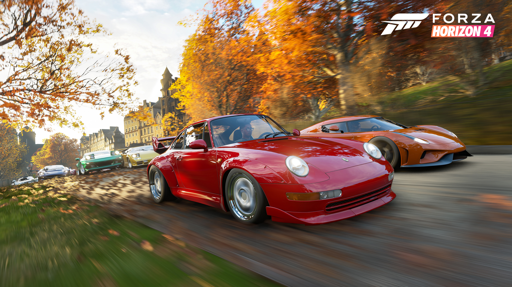
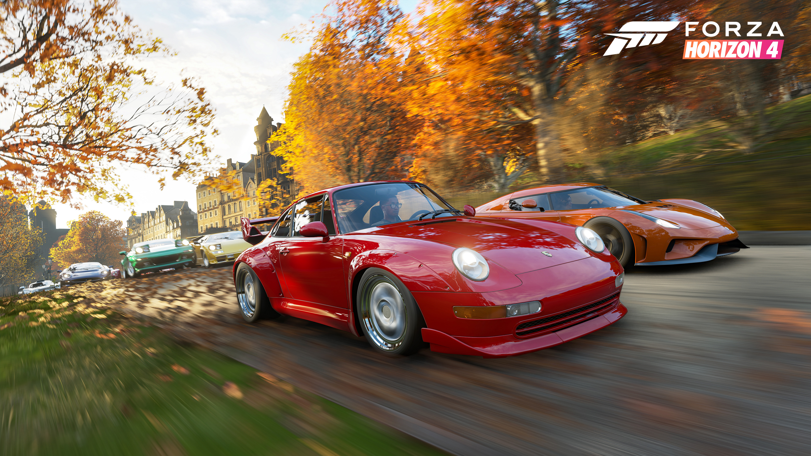

All Forza Games
Forza entries usually sit at the top of the racing and racing-sim genres. That’s because the series looks for high maneuverability, a vast selection of vehicles, customization options, and top-of-the-line cinematic performance.
The experience comes as part of two sub-series within the Forza games. Turn 10 Studios centers on professional events and recipes, the Forza Motorsport series.
Playground Games creates an open-world semi-sim racing game, Forza Horizon. These games revolve around the “Horizon Festival.”
Motorsport entered the market first in 2015. The studio has created a new title every two years ever since.
The Horizon series premiered in 2012. Since then, we’ve seen yearly Forza games: Motorsport debuts in the odd years; Horizon debuts in a couple of years.
So far, we’ve seen seven Forza Motorsport titles, five Horizon entries, and a spin-off. The total is 13 Forza games. Lastly, all entries belong to Microsoft Game Studios.
Here I have chosen to only cover the forza horizon series since I have only played them.

 
